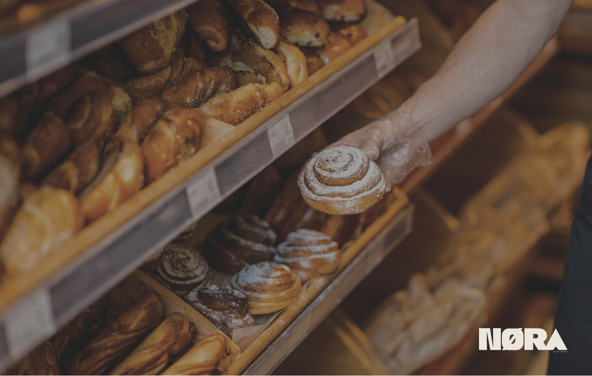
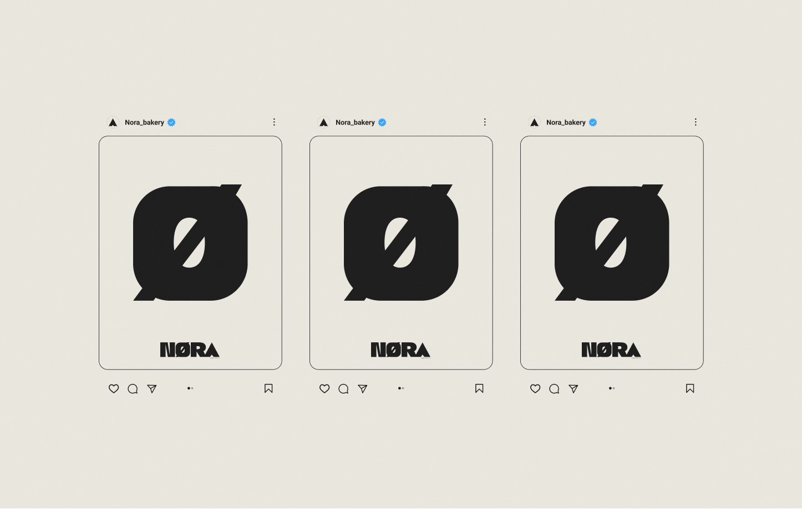
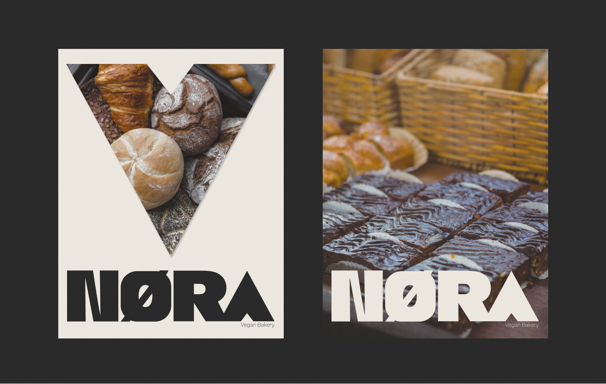
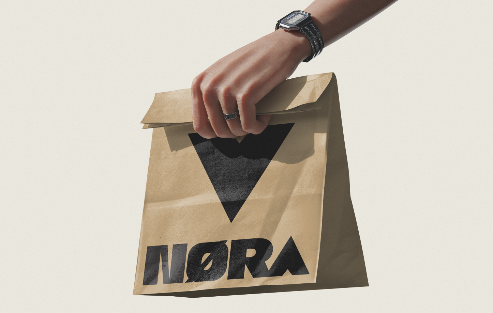
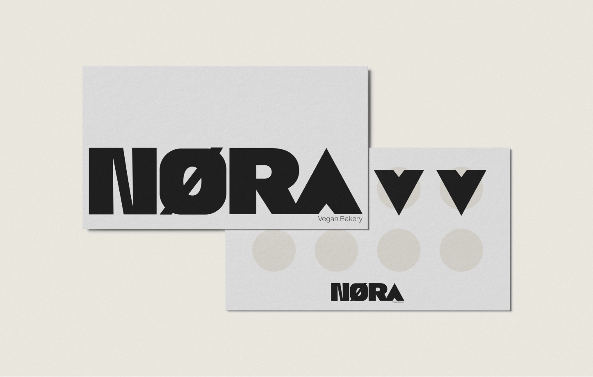
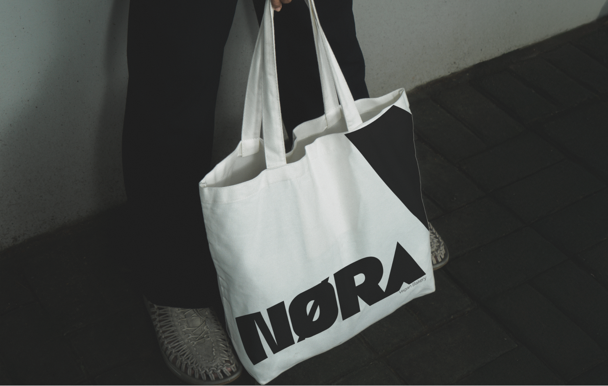
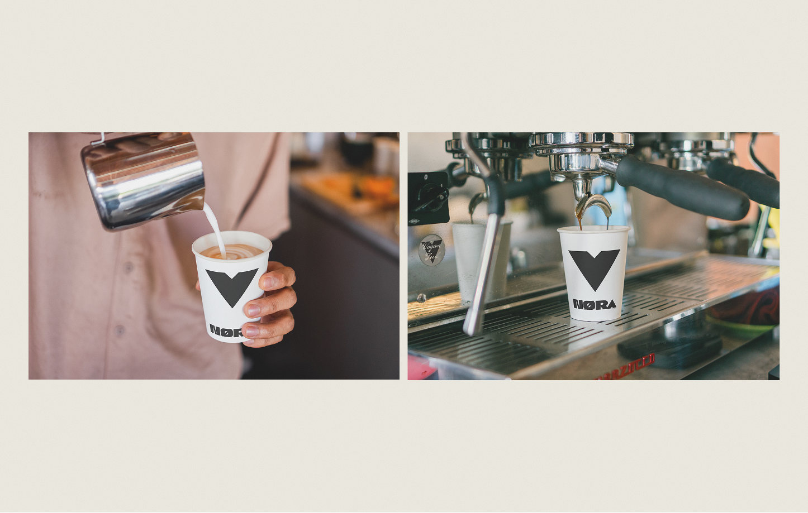
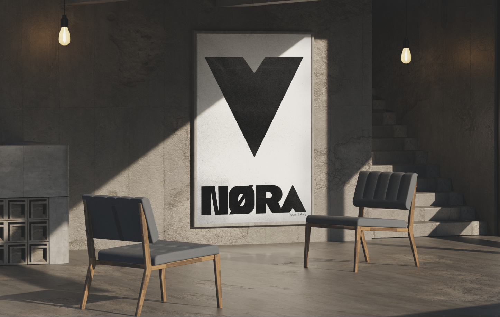
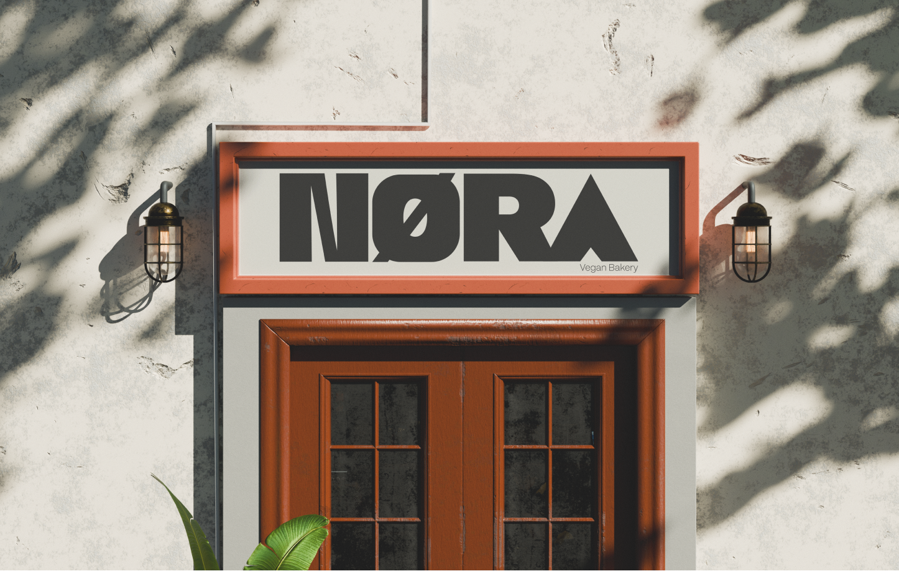

Bakery / Vegan Food
NØRA Bakery is a vegan bakery built around simplicity and care. Good food should be honest, well made, and inclusive. Recipes are plant-based by design, with real ingredients and slow processes. At NØRA, everyone belongs and everything starts from the base.
NORA Bakery is an artisanal bakery brand that blends traditional craft with contemporary elegance. This project involved developing a complete brand identity and a digital presence that reflects the bakery’s philosophy: handcrafted quality, sensory warmth, and a timeless yet modern sensibility.
The work spanned:

NORA entered a competitive local market where many bakeries relied on generic visuals and uninspired positioning. The core challenge was to convey craft authenticity and premium experience through a visual language that feels both warm and elevated without resorting to overused bakery clichés.
Additionally, the digital touchpoints needed to extend the brand cohesively online while supporting future campaigns and community engagement.
Brand Identity
This identity system was designed to be flexible, memorable, and rooted in the emotional experience of artisan bakery.








The identity and digital presence succeeded at creating a brand that feels real, tactile and sincere, not just another bakery.
Key takeaway: heritage cues + modern clarity = emotional credibility.
The system was built to feel both handcrafted and digitally fluent.